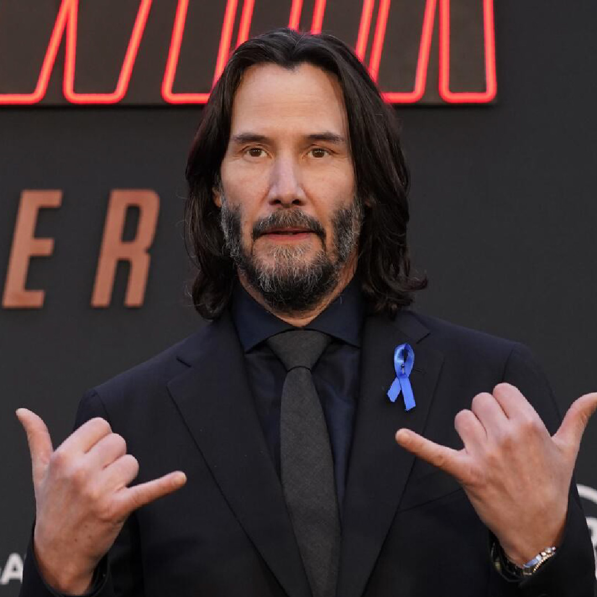

Keanu Reeves: a dose perfeita de carisma e talento, embrulhada em um pacote de pura elegância cinematográfica.
Voltar


É comum artistas mudarem seus nomes antes de se tornarem famosos, o que quase aconteceu com Keanu Reeves. Durante uma entrevista ao apresentador Jimmy Fallon, em 2017, o ator revelou que quase mudou seu nome para Chuck Spadina quando seus agentes sugeriram uma mudança durante o início de sua carreira em Hollywood. Mas ninguém curtiu a ideia e ele acabou ficando conhecido como Keanu Reeves mesmo.
Keanu Reeves é uma pessoa de muitos talentos, e ele já usou suas aptidões musicais para entrar no mundo da música na década de 1990 com a banda Dogstar, um projeto de rock alternativo e folk criado por ele e o baterista Robert Mailhouse. Apesar de ter encerrado em 2002, a fama de Keanu, que tocava baixo na banda, chamou atenção para o grupo, fazendo com que eles participassem de turnês e gravassem alguns discos.
A Coca-Cola é uma das marcas mais influentes do mundo, em grande parte devido à sua extensa história de comerciais. No começo de sua carreira, Keanu Reeves participou de um desses comerciais nos anos 80, onde ele apareceu como um ciclista. Ele relembrou essa experiência durante uma entrevista em 2018, mencionando que as filmagens ocorreram ao longo de três dias e que teve que consumir muitos refrigerantes durante o processo.